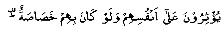

A Sahaabi (RA) came to Nabi (Sallallahu Alayhi Wasallam) and complained of hunger and suffering. At that time Nabi (Sallallahu Alayhi Wasallam) had nothing on hand, or in his home to feed him.
He asked the Sahaabah (RA): "Would anybody entertain him as a guest on my behalf tonight?"
One of the Ansaar said: "O, Nabi of Allah! I will do that."
The Ansaari took the person to his house and instructed his wife: "Look here, this man is a guest of Nabi (Sallallahu Alayhi Wasallam). We will entertain him as best as we can and won't spare anything in doing so."
The wife replied: "By Allah! I have no food in the house, except a very little which is just enough for the children."
The Ansaari said: "You put the children to sleep without feeding them, while I sit with the guest over the small meal. When we start eating, put out the lamp pretending to set it right so that the guest may not become aware of my not sharing the meal with him."
The scheme worked out nicely and the whole family, including the children, stayed hungry to enable the guest to eat to his fill. It was over this incident that Allah Ta’ala revealed the verse:

"They prefer others above themselves, even though they are themselves in need. (SLIX: V9)."
There are quite a number of similar incidents about the Sahaabah (RA). The following is one of these: